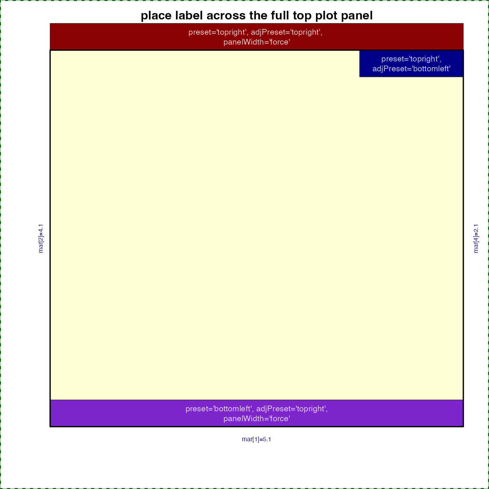
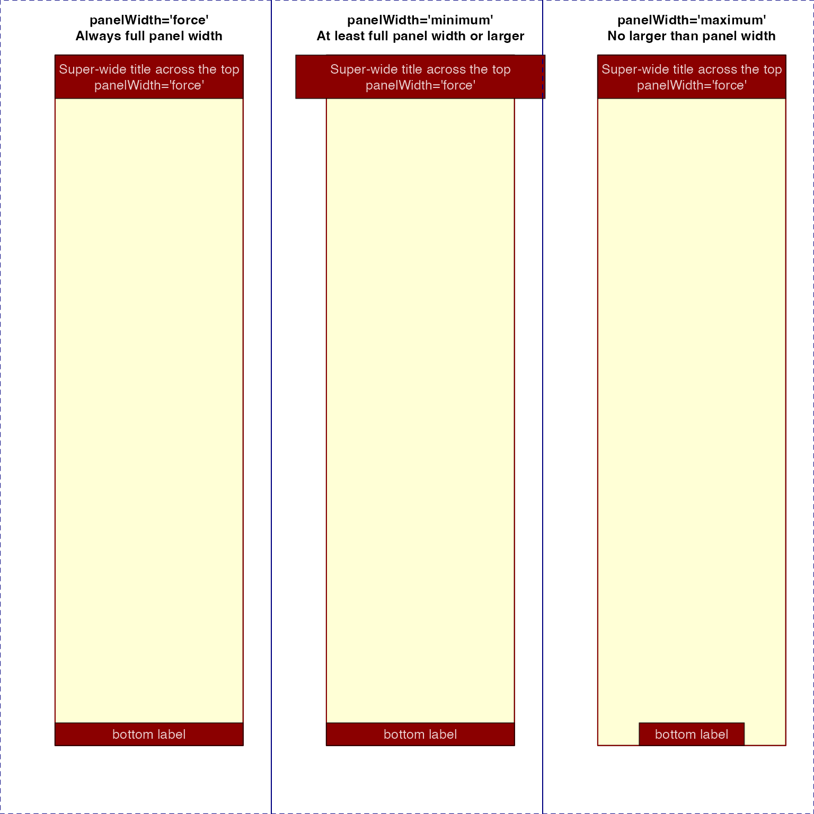
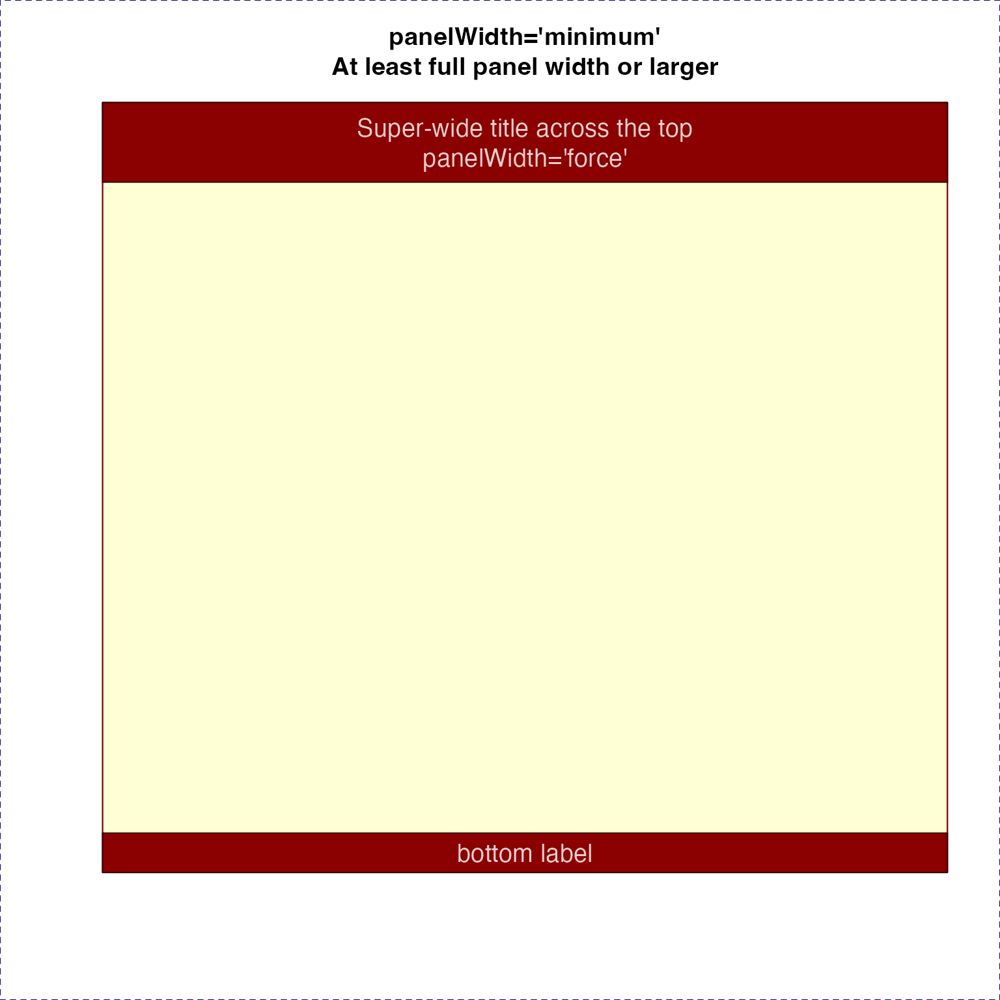

Draw text labels on a base R plot
drawLabels(
txt = NULL,
newCoords = NULL,
x = NULL,
y = NULL,
lx = NULL,
ly = NULL,
segmentLwd = 1,
segmentCol = "#00000088",
drawSegments = TRUE,
boxBorderColor = "#000000AA",
boxColor = "#FFEECC",
boxLwd = 1,
drawBox = TRUE,
drawLabels = TRUE,
font = 1,
labelCex = 0.8,
boxCexAdjust = 1.9,
labelCol = alpha2col(alpha = 0.8, setTextContrastColor(boxColor)),
doPlot = TRUE,
xpd = NA,
preset = "default",
adjPreset = "default",
preset_type = "plot",
adjX = 0.5,
adjY = 0.5,
panelWidth = "default",
trimReturns = TRUE,
verbose = FALSE,
...
)Arguments
- txt
character vector of labels, length equal to
xandy.- newCoords
optional
data.frametypically as a result of a previous call todrawLabels(). In general, it should contain colnames equivalent to the function parameters ofdrawLabels().- x, y
vector of x- and y- coordinates.
- lx, ly
optional vector of segment endpoint coordinates, used to draw a line from x,y coordinates to the segment lx,ly coordinate.
- segmentLwd, segmentCol
vector of segment line widths, and colors, respectively. Each vector will be recycled to
length(txt)as needed.- drawSegments
logical whether to draw segments, where applicable.
- boxBorderColor
vector of colors used for the box border around each label.
- boxColor
vector of colors used for the box background behind each label.
- boxLwd
vector of box line widths, sent to
graphics::rect(), this vector will be recycled tolength(txt).- drawBox
logical whether to draw boxes behind each text label.
- drawLabels
logical whether to draw each text label.
- font
vector of font values as described in
graphics::par(), where 1=normal, 2=bold, 3=italics, 4=bold-italics.- labelCex
vector of cex values used for text labels. This vector will be recycled to
length(txt)as needed.- boxCexAdjust
numeric vector length=2, used to expand the x-width and y-height of the box around around text labels.
- labelCol
vector of label colors, by default it calls
jamba::setTextContrastColor()to generate a color to contrast the background box color.- doPlot
logical whether to perform any plot operations. Set
FALSEto calculate coordinates and return adata.frameof label coordinates, which can then be manipulated before callingdrawLabels()again.- xpd
value compatible with
par("xpd"), where NA allows labels anywhere in the device region, TRUE retricts labels within the figure region, and FALSE restricts labels within the plot region.- preset
vector of text values used to position text labels relative to the x,y coordinate, where "topleft" will position the label so the entire label box is top-left of the point, therefore the point will be at the bottom-right corner of the label box. When
presetis anything by"none"theadjXandadjYvalues are ignored.- adjX, adjY
the text adjustment of labels relative to the x,y coordinate. The values are recycled to
length(txt).- panelWidth
characterstring or vector, recycled to the number of labels to be displayed. The argument indicates whether to size each label box relative to the plot panel width, intended when the labelpresetandadjPresetare set for the label to be inside the plot panel, e.g.preset="top", adjPreset="top", orpreset="topleft", adjPreset="topright". Either both are centered, or one is "right" and the other is "left". In these cases, the label box is expanded to the full plot panel width, thus filling the full visible x-axis range for the plot panel. Allowed values forpanelWidth:"default"size label boxes by text dimensions"force"size label to full plot panel width"minimum"size label at least the plot panel width, or larger if necessary to fit the text label"maximum"size label to the text label width, but no larger than the plot panel width
- trimReturns
logical whether to trim leading and trailing return (newline) characters from labels.
- verbose
logical whether to print verbose output.
- ...
additional arguments are passed to
graphics::segments()when segments are drawn, tographics::rect()when label boxes are drawn, and tographics::text()when text labels are drawn.
Value
invisible data.frame containing label coordinates used
to draw labels. This data.frame can be manipulated and provided
as input to drawLabels() for subsequent customized label
positioning.
Details
This function takes a vector of coordinates and text labels, and draws the labels with colored rectangles around each label on the plot. Each label can have unique font, cex, and color, and are drawn using vectorized operations.
TODO: In future allow rotated text labels. Not that useful within a plot panel, but sometimes useful when draw outside a plot, for example axis labels.
See also
Other jam plot functions:
adjustAxisLabelMargins(),
coordPresets(),
decideMfrow(),
getPlotAspect(),
groupedAxis(),
imageByColors(),
imageDefault(),
minorLogTicksAxis(),
nullPlot(),
plotPolygonDensity(),
plotRidges(),
plotSmoothScatter(),
shadowText_options(),
shadowText(),
showColors(),
smoothScatterJam(),
sqrtAxis(),
usrBox()
Examples
nullPlot(plotAreaTitle="");
dl_topleft <- drawLabels(x=par("usr")[1],
y=par("usr")[4],
txt="Top-left\nof plot",
preset="topleft",
boxColor="blue4");
drawLabels(x=par("usr")[2],
y=par("usr")[3],
txt="Bottom-right\nof plot",
preset="bottomright",
boxColor="green4");
drawLabels(x=mean(par("usr")[1:2]),
y=mean(par("usr")[3:4]),
txt="Center\nof plot",
preset="center",
boxColor="purple3");
points(x=c(par("usr")[1], par("usr")[2],
mean(par("usr")[1:2])),
y=c(par("usr")[4], par("usr")[3],
mean(par("usr")[3:4])),
pch=20,
col="red",
xpd=NA);
nullPlot(plotAreaTitle="");
title(main="place label across the full top plot panel", line=2.5)
dl_top <- drawLabels(
txt=c("preset='topright', adjPreset='topright', \npanelWidth='force'",
"preset='topright',\nadjPreset='bottomleft'",
"preset='bottomleft', adjPreset='topright',\npanelWidth='force'"),
preset=c("topright", "topright", "bottomleft"),
adjPreset=c("topleft", "bottomleft", "topright"),
panelWidth=c("force", "none", "force"),
boxColor=c("red4",
"blue4",
"purple3"));
box(lwd=2);

opar <- par("mfrow"=c(1, 3), "xpd"=TRUE);
on.exit(par(opar));
isub <- c(force="Always full panel width",
minimum="At least full panel width or larger",
maximum="No larger than panel width");
for (i in c("force", "minimum", "maximum")) {
nullPlot(plotAreaTitle="", doMargins=FALSE);
title(main=paste0("panelWidth='", i, "'\n",
isub[i]));
drawLabels(labelCex=1.2,
txt=c("Super-wide title across the top\npanelWidth='force'",
"bottom label"),
preset=c("top", "bottom"),
panelWidth=i,
boxColor="red4")
}


 par("mfrow"=c(1, 1));
par("mfrow"=c(1, 1));